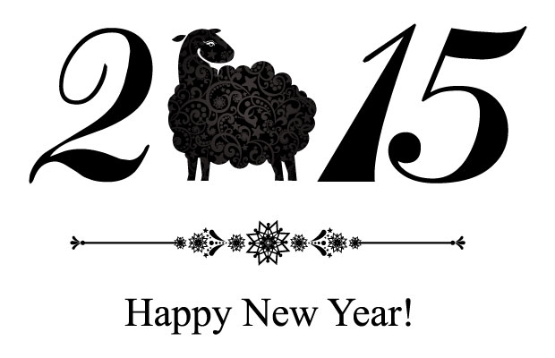

みなさん明けましておめでとうございます。
昨年は記念すべき研究所ARCS発足の年。いろいろなイベントを行い、私たちの教育に対する考えを発表してきましたが、塾の保護者の方対象のイベントで話すことには慣れているものの、まったくご新規のお客様に対してお話しする機会はほとんどなく、初めてづくしの新鮮な体験ばかりでした。
毎週更新のブログも、日記系の書き物がまともに続いたことがないわたしが本当に続けられるのかと不安でしたが、やってみると何とかなるものですね。日々思っていることを文章にしてみなさんに届ける楽しさを実感できました。ただ、読み返してみると、とにかく内容が固い！（笑）。池村先生を見習って、時にはもっと柔らかい内容で好き勝手書いてみることが今年の目標です。
2015年は、昨年から発信し続けてきた我々の教育に対する主張をより深化、洗練させるとともに、「具体的な行動」に結実させていきたいと思います。
本年もよろしくお願いします！